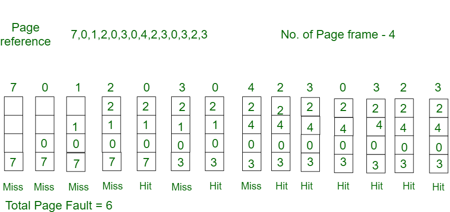

Optimal page replacement(OPR) :-
The page replacement algorithms are used in operating systems that use virtual memory management.
When a page of memory needs to be allocated to the CPU, these page replacement algorithms decide which pages should be written to the disk and which algorithms should be swapped out of memory.
This algorithm is also known as Clairvoyent Replacement Algorithm. As per the optimal page replacement technique, the page with the highest label should be removed first.
When a page needs to be swapped into the memory, the OS will swap out the page which is not required to be used in the near future.
This page replacement algorithm is a little unreliable to implement and, therefore, it cannot be implemented in a general-purpose operating system.
Examle 1 :-
Consider the page references 7, 0, 1, 2, 0, 3, 0, 4, 2, 3, 0, 3, 2,4 page frame. Find number of page fault.
solution :-

- Initially all slots are empty, so when 7 0 1 2 are allocated to the empty slots —> 4 Page faults.
- 0 is already there so —> 0 Page fault.
- when 3 came it will take the place of 7 because it is not used for the longest duration.
- of time in the future.—>1 Page fault.
- 4 will takes place of 1 —> 1 Page Fault
- Finally when 3 come it is not avilable so it replaces 0 1 page fault.
- Now for the further page reference string —> 0 Page fault because they are already available in the memory.